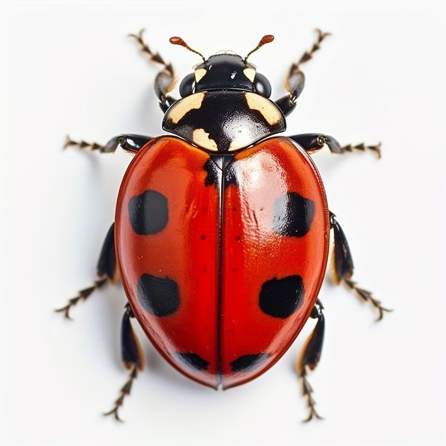

Invertebrates
Animals that neither possess nor develop a vertebral column.

The squid is a marine invertebrate belonging to the cephalopod class. This creature is famous for having ten limbs (eight arms and two longer tentacles) and an incredible ability to change its color and pattern in fractions of a second, thanks to specialized cells in its skin.

The centipede belongs to the class Chilopoda and is an invertebrate that lives in diverse environments worldwide. Its body is elongated and segmented, with each segment bearing a single pair of legs. Despite what its common Arabic name suggests (Mother of 44).

"The ladybug" (also called ladybird) is a small invertebrate insect. It belongs to the beetle family 'Coccinellidae. Ladybugs usually have a red or orange body with black spots. They are very helpful to farmers because they eat harmful insects like aphids that damage plants. Ladybugs have four life stages: egg, larva, pupa, and adult. When they feel threatened, they release a bad-tasting liquid to protect themselves. Ladybugs are often seen as a symbol of good luck.